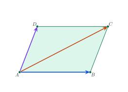
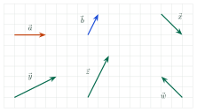
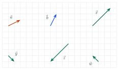
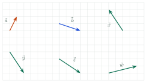
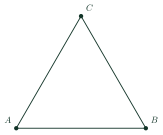
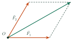
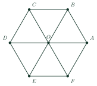
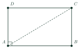
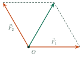
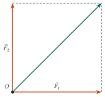

Sum and Difference of Two VectorsTổng và hiệu của hai vectơ
Grade 10 · Topic: VectorsLớp 10 · Chủ đề: Vectơ
1Lesson IntroductionGiới thiệu bài học
Learning goalsMục tiêu bài học
By the end of this lesson you can:
Sau bài học này, em có thể:
add vectors with the triangle rule and the parallelogram rule;
cộng hai vectơ bằng quy tắc ba điểm và quy tắc hình bình hành;
subtract vectors using opposite vectors;
trừ hai vectơ bằng cách cộng với vectơ đối;
simplify vector expressions and prove vector identities;
rút gọn biểu thức vectơ và chứng minh đẳng thức vectơ;
use sums of vectors in forces and in the midpoint property.
dùng tổng vectơ cho hợp lực và tính chất trung điểm.
2Mathematical VocabularyTừ vựng Toán học
sum of two vectors – the vector \(\vec a+\vec b\) obtained by the triangle or parallelogram rule.
tổng của hai vectơ – vectơ \(\vec a+\vec b\) nhận được theo quy tắc ba điểm hoặc quy tắc hình bình hành.
triangle rule – \(\overrightarrow{AB}+\overrightarrow{BC}=\overrightarrow{AC}\).
quy tắc ba điểm – \(\overrightarrow{AB}+\overrightarrow{BC}=\overrightarrow{AC}\) với ba điểm \(A,B,C\) bất kì.
parallelogram rule – if \(ABCD\) is a parallelogram, \(\overrightarrow{AB}+\overrightarrow{AD}=\overrightarrow{AC}\).
quy tắc hình bình hành – nếu \(ABCD\) là hình bình hành thì \(\overrightarrow{AB}+\overrightarrow{AD}=\overrightarrow{AC}\).
difference of two vectors – \(\vec a-\vec b=\vec a+(-\vec b)\).
hiệu của hai vectơ – \(\vec a-\vec b=\vec a+(-\vec b)\).
resultant force – the single force equal to the sum of the forces.
hợp lực – lực duy nhất bằng tổng các lực tác dụng.
midpoint – the point that cuts a segment into two equal parts.
trung điểm – điểm chia đoạn thẳng thành hai phần bằng nhau.
simplify – write an expression in a shorter form.
rút gọn – viết biểu thức dưới dạng ngắn gọn hơn.
3Useful English PhrasesCụm từ tiếng Anh thường gặp
Simplify the expression.
Rút gọn biểu thức.
Use the triangle rule.
Dùng quy tắc ba điểm.
Find the resultant force.
Tìm hợp lực.
Prove the vector identity.
Chứng minh đẳng thức vectơ.
\(I\) is the midpoint of \(AB\).
\(I\) là trung điểm của \(AB\).
4Prerequisite ReviewÔn tập kiến thức nền
Equal vectors have the same direction and length; the opposite vector of \(\overrightarrow{AB}\) is \(\overrightarrow{BA}\). In a parallelogram \(\overrightarrow{AB}=\overrightarrow{DC}\).
Hai vectơ bằng nhau cùng hướng và cùng độ dài; vectơ đối của \(\overrightarrow{AB}\) là \(\overrightarrow{BA}\). Trong hình bình hành \(\overrightarrow{AB}=\overrightarrow{DC}\).
5TheoryLý thuyết
5.1 Sum of two vectorsTổng của hai vectơ
Triangle ruleQuy tắc ba điểm
The end of the first vector is the start of the second. This works for any three points \(A,B,C\), and also for more vectors: \(\overrightarrow{AB}+\overrightarrow{BC}+\overrightarrow{CD}=\overrightarrow{AD}\).
Điểm cuối của vectơ thứ nhất là điểm đầu của vectơ thứ hai. Quy tắc đúng với ba điểm \(A,B,C\) bất kì, và mở rộng: \(\overrightarrow{AB}+\overrightarrow{BC}+\overrightarrow{CD}=\overrightarrow{AD}\).
5.2 Parallelogram ruleQuy tắc hình bình hành

Parallelogram ruleQuy tắc hình bình hành
If \(ABCD\) is a parallelogram, the sum of two vectors from \(A\) is the diagonal from \(A\). Properties: \(\vec a+\vec b=\vec b+\vec a\), \((\vec a+\vec b)+\vec c=\vec a+(\vec b+\vec c)\), \(\vec a+\vec0=\vec a\).
Nếu \(ABCD\) là hình bình hành thì tổng hai vectơ xuất phát từ \(A\) là đường chéo xuất phát từ \(A\). Tính chất: \(\vec a+\vec b=\vec b+\vec a\), \((\vec a+\vec b)+\vec c=\vec a+(\vec b+\vec c)\), \(\vec a+\vec0=\vec a\).
5.3 Difference of two vectorsHiệu của hai vectơ
DifferenceHiệu
For any three points \(O,A,B\): \(\overrightarrow{OA}-\overrightarrow{OB}=\overrightarrow{BA}\). Also \(\vec a+(-\vec a)=\vec0\).
Với ba điểm \(O,A,B\) bất kì: \(\overrightarrow{OA}-\overrightarrow{OB}=\overrightarrow{BA}\). Ngoài ra \(\vec a+(-\vec a)=\vec0\).
5.4 ApplicationsỨng dụng
Midpoint and forcesTrung điểm và hợp lực
\(I\) is the midpoint of \(AB\) \(\iff\overrightarrow{IA}+\overrightarrow{IB}=\vec0\).
\(I\) là trung điểm của \(AB\) \(\iff\overrightarrow{IA}+\overrightarrow{IB}=\vec0\).
Two forces at one point: the resultant is the diagonal of the parallelogram built on them.
Hai lực cùng đặt tại một điểm: hợp lực là đường chéo của hình bình hành dựng trên hai lực đó.
If the two forces are perpendicular with sizes \(p\) and \(q\), the resultant has size \(\sqrt{p^2+q^2}\).
Nếu hai lực vuông góc, độ lớn \(p\) và \(q\), hợp lực có độ lớn \(\sqrt{p^2+q^2}\).
Watch out!Lưu ý
In general \(|\vec a+\vec b|\ne|\vec a|+|\vec b|\). Equality holds only when the vectors have the same direction.
Nói chung \(|\vec a+\vec b|\ne|\vec a|+|\vec b|\). Chỉ bằng nhau khi hai vectơ cùng hướng.
6Worked ExamplesVí dụ có lời giải
ExampleVí dụ 1BasicCơ bản – Triangle ruleQuy tắc ba điểm
Simplify \(\overrightarrow{MN}+\overrightarrow{NP}+\overrightarrow{PQ}\).
Rút gọn \(\overrightarrow{MN}+\overrightarrow{NP}+\overrightarrow{PQ}\).
Analysis: Each end is the next start.
Phân tích: Mỗi điểm cuối là điểm đầu của vectơ kế tiếp.
\(\overrightarrow{MN}+\overrightarrow{NP}=\overrightarrow{MP}\).
\(\overrightarrow{MN}+\overrightarrow{NP}=\overrightarrow{MP}\).
\(\overrightarrow{MP}+\overrightarrow{PQ}=\overrightarrow{MQ}\).
\(\overrightarrow{MP}+\overrightarrow{PQ}=\overrightarrow{MQ}\).
\(\overrightarrow{MQ}\).
\(\overrightarrow{MQ}\).
ExampleVí dụ 2BasicCơ bản – Parallelogram ruleQuy tắc hình bình hành
\(ABCD\) is a parallelogram. Find \(\overrightarrow{AB}+\overrightarrow{AD}\) and \(\overrightarrow{AB}+\overrightarrow{CB}\).
Cho hình bình hành \(ABCD\). Tìm \(\overrightarrow{AB}+\overrightarrow{AD}\) và \(\overrightarrow{AB}+\overrightarrow{CB}\).
Analysis: For the second, replace \(\overrightarrow{CB}\) by \(\overrightarrow{DA}\).
Phân tích: Với câu sau, thay \(\overrightarrow{CB}\) bằng \(\overrightarrow{DA}\).
\(\overrightarrow{AB}+\overrightarrow{AD}=\overrightarrow{AC}\).
\(\overrightarrow{AB}+\overrightarrow{AD}=\overrightarrow{AC}\).
\(\overrightarrow{CB}=\overrightarrow{DA}\), so \(\overrightarrow{AB}+\overrightarrow{DA}=\overrightarrow{DA}+\overrightarrow{AB}=\overrightarrow{DB}\).
\(\overrightarrow{CB}=\overrightarrow{DA}\) nên \(\overrightarrow{AB}+\overrightarrow{DA}=\overrightarrow{DA}+\overrightarrow{AB}=\overrightarrow{DB}\).
\(\overrightarrow{AC}\) and \(\overrightarrow{DB}\).
\(\overrightarrow{AC}\) và \(\overrightarrow{DB}\).
ExampleVí dụ 3IntermediateTrung bình – DifferenceHiệu hai vectơ
Simplify \(\overrightarrow{AB}-\overrightarrow{CB}+\overrightarrow{CD}\).
Rút gọn \(\overrightarrow{AB}-\overrightarrow{CB}+\overrightarrow{CD}\).
Analysis: Write \(-\overrightarrow{CB}=\overrightarrow{BC}\).
Phân tích: Viết \(-\overrightarrow{CB}=\overrightarrow{BC}\).
\(\overrightarrow{AB}+\overrightarrow{BC}=\overrightarrow{AC}\).
\(\overrightarrow{AB}+\overrightarrow{BC}=\overrightarrow{AC}\).
\(\overrightarrow{AC}+\overrightarrow{CD}=\overrightarrow{AD}\).
\(\overrightarrow{AC}+\overrightarrow{CD}=\overrightarrow{AD}\).
\(\overrightarrow{AD}\).
\(\overrightarrow{AD}\).
ExampleVí dụ 4IntermediateTrung bình – Resultant forceHợp lực
Two forces of 30 N and 40 N act at one point at a right angle. Find the size of the resultant force.
Hai lực 30 N và 40 N cùng tác dụng lên một vật tại một điểm, vuông góc với nhau. Tính độ lớn hợp lực.
Analysis: The resultant is the diagonal of a rectangle.
Phân tích: Hợp lực là đường chéo của hình chữ nhật.
\(F=\sqrt{30^2+40^2}\).
\(F=\sqrt{30^2+40^2}\).
\(F=50\ \text{N}\).
\(F=50\ \text{N}\).
ExampleVí dụ 5AdvancedNâng cao – Prove an identityChứng minh đẳng thức
\(I\) is the midpoint of \(AB\) and \(M\) is any point. Prove \(\overrightarrow{MA}+\overrightarrow{MB}=2\overrightarrow{MI}\).
Cho \(I\) là trung điểm của \(AB\), \(M\) là điểm bất kì. Chứng minh \(\overrightarrow{MA}+\overrightarrow{MB}=2\overrightarrow{MI}\).
Analysis: Insert \(I\) with the triangle rule and use \(\overrightarrow{IA}+\overrightarrow{IB}=\vec0\).
Phân tích: Chèn điểm \(I\) bằng quy tắc ba điểm và dùng \(\overrightarrow{IA}+\overrightarrow{IB}=\vec0\).
\(\overrightarrow{MA}=\overrightarrow{MI}+\overrightarrow{IA}\), \(\overrightarrow{MB}=\overrightarrow{MI}+\overrightarrow{IB}\).
\(\overrightarrow{MA}=\overrightarrow{MI}+\overrightarrow{IA}\), \(\overrightarrow{MB}=\overrightarrow{MI}+\overrightarrow{IB}\).
Add: \(2\overrightarrow{MI}+(\overrightarrow{IA}+\overrightarrow{IB})=2\overrightarrow{MI}\).
Cộng lại: \(2\overrightarrow{MI}+(\overrightarrow{IA}+\overrightarrow{IB})=2\overrightarrow{MI}\).
So \(\overrightarrow{MA}+\overrightarrow{MB}=2\overrightarrow{MI}\).
Vậy \(\overrightarrow{MA}+\overrightarrow{MB}=2\overrightarrow{MI}\).
7PracticeBài tập luyện tập
A. Multiple ChoiceA. Trắc nghiệm nhiều lựa chọn
Simplify \(\overrightarrow{MN}+\overrightarrow{NP}+\overrightarrow{PQ}\).
Rút gọn \(\overrightarrow{MN}+\overrightarrow{NP}+\overrightarrow{PQ}\).
Answer: c. Triangle rule: \(\overrightarrow{MQ}\).
Đáp án c. Quy tắc ba điểm: \(\overrightarrow{MQ}\).
ABCD is a parallelogram. \(\overrightarrow{AB} + \overrightarrow{AD}=\)…
ABCD là hình bình hành. \(\overrightarrow{AB} + \overrightarrow{AD}=\)…
Answer: b. Use the parallelogram rule and equal opposite sides.
Đáp án b. Dùng quy tắc hình bình hành và các cạnh đối bằng nhau.
ABCD is a rectangle with AB = 6 and AD = 8. \(|\overrightarrow{AB}-\overrightarrow{AD}|=\)…
ABCD là hình chữ nhật có AB = 6, AD = 8. \(|\overrightarrow{AB}-\overrightarrow{AD}|=\)…
Answer: d. \(\overrightarrow{AB}-\overrightarrow{AD}=\overrightarrow{DB}\), a diagonal.
Đáp án d. \(\overrightarrow{AB}-\overrightarrow{AD}=\overrightarrow{DB}\), là một đường chéo.
In the figure, which vector is equal to \(\vec a+\vec b\)?

Trong hình vẽ, vectơ nào bằng \(\vec a+\vec b\)?
Answer: b. Count the squares: \(\vec a+\vec b\) moves 4 square(s) horizontally and 2 vertically (signs give the direction), exactly like \(\vec y\).
Đáp án b. Đếm ô: \(\vec a+\vec b\) dịch 4 ô theo phương ngang và 2 ô theo phương dọc (dấu chỉ chiều), giống hệt \(\vec y\).
\(M\), \(N\), \(P\) are the midpoints of \(AB\), \(AC\), \(BC\) (figure). Then \(\overrightarrow{AM}+\overrightarrow{AN}=\)…
\(M\), \(N\), \(P\) là trung điểm của \(AB\), \(AC\), \(BC\) (hình vẽ). Khi đó \(\overrightarrow{AM}+\overrightarrow{AN}=\)…
Answer: c. \(AMPN\) is a parallelogram, so by the parallelogram rule the sum is the diagonal \(\overrightarrow{AP}\).
Đáp án c. \(AMPN\) là hình bình hành nên theo quy tắc hình bình hành tổng bằng vectơ đường chéo \(\overrightarrow{AP}\).
B. True or FalseB. Đúng hoặc sai
In a parallelogram ABCD, \(\overrightarrow{AB}+\overrightarrow{AD}=\overrightarrow{AC}\).
Trong hình bình hành ABCD, \(\overrightarrow{AB}+\overrightarrow{AD}=\overrightarrow{AC}\).
Check with the parallelogram rule.
Kiểm tra bằng quy tắc hình bình hành.
For a regular hexagon ABCDEF with center O: \(\overrightarrow{OA}+\overrightarrow{OC}=\overrightarrow{OB}\).
Với lục giác đều ABCDEF tâm O: \(\overrightarrow{OA}+\overrightarrow{OC}=\overrightarrow{OB}\).
The sum of two such vectors is the diagonal of a rhombus.
Tổng hai vectơ đó là đường chéo của hình thoi dựng trên chúng.
\(G\) is the centroid of triangle \(ABC\) and \(I\) is the midpoint of \(BC\) (figure). \(\overrightarrow{IB}+\overrightarrow{IC}=\overrightarrow{BC}\).
\(G\) là trọng tâm tam giác \(ABC\), \(I\) là trung điểm của \(BC\) (hình vẽ). \(\overrightarrow{IB}+\overrightarrow{IC}=\overrightarrow{BC}\).
\(I\) is the midpoint of \(BC\): \(\overrightarrow{IB}+\overrightarrow{IC}=\vec0\).
\(I\) là trung điểm của \(BC\): \(\overrightarrow{IB}+\overrightarrow{IC}=\vec0\).
C. Short AnswerC. Trả lời ngắn
Two forces of 6 N and 8 N act at one point at a right angle. Find the resultant force (in N).
Hai lực 6 N và 8 N tác dụng tại một điểm, vuông góc với nhau. Tìm độ lớn hợp lực (đơn vị N).
Enter a number.
Nhập một số.
Diagonal of the rectangle of forces.
Đường chéo của hình chữ nhật lực.
ABCD is a square with side 3. Find \(|\overrightarrow{AB}+\overrightarrow{AD}|^2\).
ABCD là hình vuông cạnh 3. Tính \(|\overrightarrow{AB}+\overrightarrow{AD}|^2\).
Enter a number.
Nhập một số.
\(\overrightarrow{AB}+\overrightarrow{AD}=\overrightarrow{AC}\), \(AC^2=2a^2\).
\(\overrightarrow{AB}+\overrightarrow{AD}=\overrightarrow{AC}\), \(AC^2=2a^2\).
A. Multiple ChoiceA. Trắc nghiệm nhiều lựa chọn
Simplify \(\overrightarrow{RS}+\overrightarrow{ST}+\overrightarrow{TU}\).
Rút gọn \(\overrightarrow{RS}+\overrightarrow{ST}+\overrightarrow{TU}\).
Answer: c. Triangle rule: \(\overrightarrow{RU}\).
Đáp án c. Quy tắc ba điểm: \(\overrightarrow{RU}\).
ABCD is a parallelogram. \(\overrightarrow{AC} - \overrightarrow{AB}=\)…
ABCD là hình bình hành. \(\overrightarrow{AC} - \overrightarrow{AB}=\)…
Answer: b. Use the parallelogram rule and equal opposite sides.
Đáp án b. Dùng quy tắc hình bình hành và các cạnh đối bằng nhau.
ABCD is a rectangle with AB = 5 and AD = 12. \(|\overrightarrow{AB}-\overrightarrow{AD}|=\)…
ABCD là hình chữ nhật có AB = 5, AD = 12. \(|\overrightarrow{AB}-\overrightarrow{AD}|=\)…
Answer: d. \(\overrightarrow{AB}-\overrightarrow{AD}=\overrightarrow{DB}\), a diagonal.
Đáp án d. \(\overrightarrow{AB}-\overrightarrow{AD}=\overrightarrow{DB}\), là một đường chéo.
Using the grid, find the vector equal to \(\vec a+\vec b\).

Dựa vào lưới ô vuông, tìm vectơ bằng \(\vec a+\vec b\).
Answer: b. Count the squares: \(\vec a+\vec b\) moves 3 square(s) horizontally and 3 vertically (signs give the direction), exactly like \(\vec x\).
Đáp án b. Đếm ô: \(\vec a+\vec b\) dịch 3 ô theo phương ngang và 3 ô theo phương dọc (dấu chỉ chiều), giống hệt \(\vec x\).
\(M\), \(N\), \(P\) are the midpoints of \(AB\), \(AC\), \(BC\) (figure). Then \(\overrightarrow{BM}+\overrightarrow{BP}=\)…
\(M\), \(N\), \(P\) là trung điểm của \(AB\), \(AC\), \(BC\) (hình vẽ). Khi đó \(\overrightarrow{BM}+\overrightarrow{BP}=\)…
Answer: c. \(BMNP\) is a parallelogram, so by the parallelogram rule the sum is the diagonal \(\overrightarrow{BN}\).
Đáp án c. \(BMNP\) là hình bình hành nên theo quy tắc hình bình hành tổng bằng vectơ đường chéo \(\overrightarrow{BN}\).
B. True or FalseB. Đúng hoặc sai
In a parallelogram ABCD, \(\overrightarrow{AB}+\overrightarrow{AD}=\overrightarrow{BD}\).
Trong hình bình hành ABCD, \(\overrightarrow{AB}+\overrightarrow{AD}=\overrightarrow{BD}\).
Check with the parallelogram rule.
Kiểm tra bằng quy tắc hình bình hành.
For a regular hexagon ABCDEF with center O: \(\overrightarrow{OB}+\overrightarrow{OD}=\overrightarrow{OC}\).
Với lục giác đều ABCDEF tâm O: \(\overrightarrow{OB}+\overrightarrow{OD}=\overrightarrow{OC}\).
The sum of two such vectors is the diagonal of a rhombus.
Tổng hai vectơ đó là đường chéo của hình thoi dựng trên chúng.
\(G\) is the centroid of triangle \(ABC\) and \(I\) is the midpoint of \(BC\) (figure). \(\overrightarrow{GA}+\overrightarrow{GB}=\overrightarrow{GC}\).
\(G\) là trọng tâm tam giác \(ABC\), \(I\) là trung điểm của \(BC\) (hình vẽ). \(\overrightarrow{GA}+\overrightarrow{GB}=\overrightarrow{GC}\).
\(\overrightarrow{GA}+\overrightarrow{GB}=-\overrightarrow{GC}=\overrightarrow{CG}\).
\(\overrightarrow{GA}+\overrightarrow{GB}=-\overrightarrow{GC}=\overrightarrow{CG}\).
C. Short AnswerC. Trả lời ngắn
Two forces of 10 N and 24 N act at one point at a right angle. Find the resultant force (in N).
Hai lực 10 N và 24 N tác dụng tại một điểm, vuông góc với nhau. Tìm độ lớn hợp lực (đơn vị N).
Enter a number.
Nhập một số.
Diagonal of the rectangle of forces.
Đường chéo của hình chữ nhật lực.
ABCD is a square with side 5. Find \(|\overrightarrow{AB}+\overrightarrow{AD}|^2\).
ABCD là hình vuông cạnh 5. Tính \(|\overrightarrow{AB}+\overrightarrow{AD}|^2\).
Enter a number.
Nhập một số.
\(\overrightarrow{AB}+\overrightarrow{AD}=\overrightarrow{AC}\), \(AC^2=2a^2\).
\(\overrightarrow{AB}+\overrightarrow{AD}=\overrightarrow{AC}\), \(AC^2=2a^2\).
A. Multiple ChoiceA. Trắc nghiệm nhiều lựa chọn
Simplify \(\overrightarrow{EF}+\overrightarrow{FG}+\overrightarrow{GH}\).
Rút gọn \(\overrightarrow{EF}+\overrightarrow{FG}+\overrightarrow{GH}\).
Answer: c. Triangle rule: \(\overrightarrow{EH}\).
Đáp án c. Quy tắc ba điểm: \(\overrightarrow{EH}\).
ABCD is a parallelogram. \(\overrightarrow{DB} - \overrightarrow{DA}=\)…
ABCD là hình bình hành. \(\overrightarrow{DB} - \overrightarrow{DA}=\)…
Answer: b. Use the parallelogram rule and equal opposite sides.
Đáp án b. Dùng quy tắc hình bình hành và các cạnh đối bằng nhau.
ABCD is a rectangle with AB = 8 and AD = 15. \(|\overrightarrow{AB}-\overrightarrow{AD}|=\)…
ABCD là hình chữ nhật có AB = 8, AD = 15. \(|\overrightarrow{AB}-\overrightarrow{AD}|=\)…
Answer: d. \(\overrightarrow{AB}-\overrightarrow{AD}=\overrightarrow{DB}\), a diagonal.
Đáp án d. \(\overrightarrow{AB}-\overrightarrow{AD}=\overrightarrow{DB}\), là một đường chéo.
Which of the vectors drawn equals \(\vec a-\vec b\)?

Trong các vectơ đã vẽ, vectơ nào bằng \(\vec a-\vec b\)?
Answer: b. Count the squares: \(\vec a-\vec b\) moves -2 square(s) horizontally and 3 vertically (signs give the direction), exactly like \(\vec x\).
Đáp án b. Đếm ô: \(\vec a-\vec b\) dịch -2 ô theo phương ngang và 3 ô theo phương dọc (dấu chỉ chiều), giống hệt \(\vec x\).
\(M\), \(N\), \(P\) are the midpoints of \(AB\), \(AC\), \(BC\) (figure). Then \(\overrightarrow{CN}+\overrightarrow{CP}=\)…
\(M\), \(N\), \(P\) là trung điểm của \(AB\), \(AC\), \(BC\) (hình vẽ). Khi đó \(\overrightarrow{CN}+\overrightarrow{CP}=\)…
Answer: c. \(CNMP\) is a parallelogram, so by the parallelogram rule the sum is the diagonal \(\overrightarrow{CM}\).
Đáp án c. \(CNMP\) là hình bình hành nên theo quy tắc hình bình hành tổng bằng vectơ đường chéo \(\overrightarrow{CM}\).
B. True or FalseB. Đúng hoặc sai
In a parallelogram ABCD, \(\overrightarrow{AC}-\overrightarrow{AD}=\overrightarrow{DC}\).
Trong hình bình hành ABCD, \(\overrightarrow{AC}-\overrightarrow{AD}=\overrightarrow{DC}\).
Check with the parallelogram rule.
Kiểm tra bằng quy tắc hình bình hành.
For a regular hexagon ABCDEF with center O: \(\overrightarrow{OA}+\overrightarrow{OD}=\overrightarrow{OC}\).
Với lục giác đều ABCDEF tâm O: \(\overrightarrow{OA}+\overrightarrow{OD}=\overrightarrow{OC}\).
The sum of two such vectors is the diagonal of a rhombus.
Tổng hai vectơ đó là đường chéo của hình thoi dựng trên chúng.
\(G\) is the centroid of triangle \(ABC\) and \(I\) is the midpoint of \(BC\) (figure). \(\overrightarrow{BA}+\overrightarrow{AI}=\overrightarrow{BC}\).
\(G\) là trọng tâm tam giác \(ABC\), \(I\) là trung điểm của \(BC\) (hình vẽ). \(\overrightarrow{BA}+\overrightarrow{AI}=\overrightarrow{BC}\).
Chasles: \(\overrightarrow{BA}+\overrightarrow{AI}=\overrightarrow{BI}\ne\overrightarrow{BC}\).
Quy tắc ba điểm: \(\overrightarrow{BA}+\overrightarrow{AI}=\overrightarrow{BI}\ne\overrightarrow{BC}\).
C. Short AnswerC. Trả lời ngắn
Two forces of 24 N and 45 N act at one point at a right angle. Find the resultant force (in N).
Hai lực 24 N và 45 N tác dụng tại một điểm, vuông góc với nhau. Tìm độ lớn hợp lực (đơn vị N).
Enter a number.
Nhập một số.
Diagonal of the rectangle of forces.
Đường chéo của hình chữ nhật lực.
ABCD is a square with side 7. Find \(|\overrightarrow{AB}+\overrightarrow{AD}|^2\).
ABCD là hình vuông cạnh 7. Tính \(|\overrightarrow{AB}+\overrightarrow{AD}|^2\).
Enter a number.
Nhập một số.
\(\overrightarrow{AB}+\overrightarrow{AD}=\overrightarrow{AC}\), \(AC^2=2a^2\).
\(\overrightarrow{AB}+\overrightarrow{AD}=\overrightarrow{AC}\), \(AC^2=2a^2\).
D. Self-practice: Multiple ChoiceD. Tự luyện: trắc nghiệm
Triangle \(ABC\) is equilateral with side \(6\) (figure). Then \(|\overrightarrow{AB}+\overrightarrow{AC}|=\)…

Tam giác \(ABC\) đều cạnh \(6\) (hình vẽ). Khi đó \(|\overrightarrow{AB}+\overrightarrow{AC}|=\)…
Answer: b. Sum: twice the median from \(A\): \(2\cdot\dfrac{6\sqrt3}{2}=6\sqrt{3}\).
Đáp án b. Tổng bằng hai lần vectơ trung tuyến từ \(A\): \(2\cdot\dfrac{6\sqrt3}{2}=6\sqrt{3}\).
A student wrote \(\overrightarrow{AB}-\overrightarrow{AC}=\overrightarrow{BC}\). Which comment is correct?
Một bạn viết \(\overrightarrow{AB}-\overrightarrow{AC}=\overrightarrow{BC}\). Nhận xét nào đúng?
Answer: b. Difference rule: \(\overrightarrow{OX}-\overrightarrow{OY}=\overrightarrow{YX}\), so \(\overrightarrow{AB}-\overrightarrow{AC}=\overrightarrow{CB}\).
Đáp án b. Quy tắc hiệu: \(\overrightarrow{OX}-\overrightarrow{OY}=\overrightarrow{YX}\) nên \(\overrightarrow{AB}-\overrightarrow{AC}=\overrightarrow{CB}\).
Given triangle \(ABC\) and a point \(M\) with \(\overrightarrow{MA}-\overrightarrow{MB}+\overrightarrow{MC}=\vec0\). Then…
Cho tam giác \(ABC\) và điểm \(M\) thỏa mãn \(\overrightarrow{MA}-\overrightarrow{MB}+\overrightarrow{MC}=\vec0\). Khi đó…
Answer: a. \(\overrightarrow{MA}-\overrightarrow{MB}=\overrightarrow{BA}\), so \(\overrightarrow{MC}=\overrightarrow{AB}\): \(ABCM\) is a parallelogram.
Đáp án a. \(\overrightarrow{MA}-\overrightarrow{MB}=\overrightarrow{BA}\) nên \(\overrightarrow{MC}=\overrightarrow{AB}\): \(ABCM\) là hình bình hành.
Two forces \(\vec F_1\), \(\vec F_2\), each of \(20\) N, act on an object at \(O\); the angle between them is \(60^\circ\) (figure). The magnitude of the resultant force is…

Hai lực \(\vec F_1\), \(\vec F_2\), mỗi lực \(20\) N, cùng tác động vào vật tại \(O\); góc giữa chúng là \(60^\circ\) (hình vẽ). Độ lớn hợp lực là…
Answer: c. The resultant is the diagonal of a rhombus with angle \(60^\circ\).
Đáp án c. Hợp lực là đường chéo của hình thoi có góc \(60^\circ\).
\(ABCDEF\) is a regular hexagon with center \(O\) (figure). Then \(\overrightarrow{AB}+\overrightarrow{AF}=\)…

\(ABCDEF\) là lục giác đều tâm \(O\) (hình vẽ). Khi đó \(\overrightarrow{AB}+\overrightarrow{AF}=\)…
Answer: b. The two vectors are sides of a rhombus whose diagonal is \(\overrightarrow{AO}\).
Đáp án b. Hai vectơ là hai cạnh của một hình thoi có đường chéo \(\overrightarrow{AO}\).
\(|\vec a|=3\) and \(|\vec b|=9\). Which value can \(|\vec a+\vec b|\) take?
\(|\vec a|=3\), \(|\vec b|=9\). \(|\vec a+\vec b|\) có thể nhận giá trị nào?
Answer: c. \(9-3\le|\vec a+\vec b|\le9+3\); only \(11\) lies in \([6;\,12]\).
Đáp án c. \(9-3\le|\vec a+\vec b|\le9+3\); chỉ \(11\) thuộc \([6;\,12]\).
\(G\) is the centroid of triangle \(ABC\) (figure). Then \(\overrightarrow{GA}+\overrightarrow{GB}=\)…
\(G\) là trọng tâm tam giác \(ABC\) (hình vẽ). Khi đó \(\overrightarrow{GA}+\overrightarrow{GB}=\)…
Answer: b. From \(\overrightarrow{GA}+\overrightarrow{GB}+\overrightarrow{GC}=\vec0\): the sum equals \(-\overrightarrow{GC}=\overrightarrow{CG}\).
Đáp án b. Từ \(\overrightarrow{GA}+\overrightarrow{GB}+\overrightarrow{GC}=\vec0\): tổng bằng \(-\overrightarrow{GC}=\overrightarrow{CG}\).
\(ABCD\) is a rectangle with \(AB=3\), \(AD=4\) (figure). Then \(|\overrightarrow{AB}+\overrightarrow{AD}+\overrightarrow{AC}|=\)…

Hình chữ nhật \(ABCD\) có \(AB=3\), \(AD=4\) (hình vẽ). Khi đó \(|\overrightarrow{AB}+\overrightarrow{AD}+\overrightarrow{AC}|=\)…
Answer: d. \(\overrightarrow{AB}+\overrightarrow{AD}=\overrightarrow{AC}\), so the sum is \(2\overrightarrow{AC}\) with length \(2\cdot5=10\).
Đáp án d. \(\overrightarrow{AB}+\overrightarrow{AD}=\overrightarrow{AC}\) nên tổng bằng \(2\overrightarrow{AC}\), độ dài \(2\cdot5=10\).
D. Self-practice: Multiple ChoiceD. Tự luyện: trắc nghiệm
Triangle \(ABC\) is equilateral with side \(3\) (figure). Then \(|\overrightarrow{AB}-\overrightarrow{AC}|=\)…
Tam giác \(ABC\) đều cạnh \(3\) (hình vẽ). Khi đó \(|\overrightarrow{AB}-\overrightarrow{AC}|=\)…
Answer: c. \(\overrightarrow{AB}-\overrightarrow{AC}=\overrightarrow{CB}\), length \(3\).
Đáp án c. \(\overrightarrow{AB}-\overrightarrow{AC}=\overrightarrow{CB}\), độ dài \(3\).
A student wrote \(\overrightarrow{MN}-\overrightarrow{MP}=\overrightarrow{NP}\). Which comment is correct?
Một bạn viết \(\overrightarrow{MN}-\overrightarrow{MP}=\overrightarrow{NP}\). Nhận xét nào đúng?
Answer: d. Difference rule: \(\overrightarrow{OX}-\overrightarrow{OY}=\overrightarrow{YX}\), so \(\overrightarrow{MN}-\overrightarrow{MP}=\overrightarrow{PN}\).
Đáp án d. Quy tắc hiệu: \(\overrightarrow{OX}-\overrightarrow{OY}=\overrightarrow{YX}\) nên \(\overrightarrow{MN}-\overrightarrow{MP}=\overrightarrow{PN}\).
Given triangle \(ABC\) and a point \(M\) with \(\overrightarrow{MB}-\overrightarrow{MC}+\overrightarrow{MA}=\vec0\). Then…
Cho tam giác \(ABC\) và điểm \(M\) thỏa mãn \(\overrightarrow{MB}-\overrightarrow{MC}+\overrightarrow{MA}=\vec0\). Khi đó…
Answer: b. \(\overrightarrow{MB}-\overrightarrow{MC}=\overrightarrow{CB}\), so \(\overrightarrow{MA}=\overrightarrow{BC}\): \(BCAM\) is a parallelogram.
Đáp án b. \(\overrightarrow{MB}-\overrightarrow{MC}=\overrightarrow{CB}\) nên \(\overrightarrow{MA}=\overrightarrow{BC}\): \(BCAM\) là hình bình hành.
Two forces \(\vec F_1\), \(\vec F_2\), each of \(50\) N, act on an object at \(O\); the angle between them is \(120^\circ\) (figure). The magnitude of the resultant force is…

Hai lực \(\vec F_1\), \(\vec F_2\), mỗi lực \(50\) N, cùng tác động vào vật tại \(O\); góc giữa chúng là \(120^\circ\) (hình vẽ). Độ lớn hợp lực là…
Answer: b. The resultant is the diagonal of a rhombus with angle \(120^\circ\).
Đáp án b. Hợp lực là đường chéo của hình thoi có góc \(120^\circ\).
\(ABCDEF\) is a regular hexagon with center \(O\) (figure). Then \(\overrightarrow{OB}+\overrightarrow{OF}=\)…
\(ABCDEF\) là lục giác đều tâm \(O\) (hình vẽ). Khi đó \(\overrightarrow{OB}+\overrightarrow{OF}=\)…
Answer: c. The two vectors are sides of a rhombus whose diagonal is \(\overrightarrow{OA}\).
Đáp án c. Hai vectơ là hai cạnh của một hình thoi có đường chéo \(\overrightarrow{OA}\).
Two displacements have lengths 2 m and 7 m. Which value can the length of their sum be (in m)?
Hai độ dời có độ dài 2 m và 7 m. Độ dài của tổng hai độ dời có thể bằng bao nhiêu (m)?
Answer: d. \(7-2\le|\vec a+\vec b|\le7+2\); only \(6\) lies in \([5;\,9]\).
Đáp án d. \(7-2\le|\vec a+\vec b|\le7+2\); chỉ \(6\) thuộc \([5;\,9]\).
\(G\) is the centroid of triangle \(ABC\) (figure). Then \(\overrightarrow{GB}+\overrightarrow{GC}=\)…
\(G\) là trọng tâm tam giác \(ABC\) (hình vẽ). Khi đó \(\overrightarrow{GB}+\overrightarrow{GC}=\)…
Answer: d. From \(\overrightarrow{GA}+\overrightarrow{GB}+\overrightarrow{GC}=\vec0\): the sum equals \(-\overrightarrow{GA}=\overrightarrow{AG}\).
Đáp án d. Từ \(\overrightarrow{GA}+\overrightarrow{GB}+\overrightarrow{GC}=\vec0\): tổng bằng \(-\overrightarrow{GA}=\overrightarrow{AG}\).
\(ABCD\) is a rectangle with \(AB=6\), \(AD=8\) (figure). Then \(|\overrightarrow{AB}+\overrightarrow{AC}+\overrightarrow{AD}|=\)…
Hình chữ nhật \(ABCD\) có \(AB=6\), \(AD=8\) (hình vẽ). Khi đó \(|\overrightarrow{AB}+\overrightarrow{AC}+\overrightarrow{AD}|=\)…
Answer: d. \(\overrightarrow{AB}+\overrightarrow{AD}=\overrightarrow{AC}\), so the sum is \(2\overrightarrow{AC}\) with length \(2\cdot10=20\).
Đáp án d. \(\overrightarrow{AB}+\overrightarrow{AD}=\overrightarrow{AC}\) nên tổng bằng \(2\overrightarrow{AC}\), độ dài \(2\cdot10=20\).
D. Self-practice: Multiple ChoiceD. Tự luyện: trắc nghiệm
Triangle \(ABC\) is equilateral with side \(5\) (figure). Then \(|\overrightarrow{AB}+\overrightarrow{AC}|=\)…
Tam giác \(ABC\) đều cạnh \(5\) (hình vẽ). Khi đó \(|\overrightarrow{AB}+\overrightarrow{AC}|=\)…
Answer: a. Sum: twice the median from \(A\): \(2\cdot\dfrac{5\sqrt3}{2}=5\sqrt{3}\).
Đáp án a. Tổng bằng hai lần vectơ trung tuyến từ \(A\): \(2\cdot\dfrac{5\sqrt3}{2}=5\sqrt{3}\).
A student wrote \(\overrightarrow{OA}-\overrightarrow{OB}=\overrightarrow{AB}\). Which comment is correct?
Một bạn viết \(\overrightarrow{OA}-\overrightarrow{OB}=\overrightarrow{AB}\). Nhận xét nào đúng?
Answer: d. Difference rule: \(\overrightarrow{OX}-\overrightarrow{OY}=\overrightarrow{YX}\), so \(\overrightarrow{OA}-\overrightarrow{OB}=\overrightarrow{BA}\).
Đáp án d. Quy tắc hiệu: \(\overrightarrow{OX}-\overrightarrow{OY}=\overrightarrow{YX}\) nên \(\overrightarrow{OA}-\overrightarrow{OB}=\overrightarrow{BA}\).
Given triangle \(ABC\) and a point \(M\) with \(\overrightarrow{MC}-\overrightarrow{MA}+\overrightarrow{MB}=\vec0\). Then…
Cho tam giác \(ABC\) và điểm \(M\) thỏa mãn \(\overrightarrow{MC}-\overrightarrow{MA}+\overrightarrow{MB}=\vec0\). Khi đó…
Answer: c. \(\overrightarrow{MC}-\overrightarrow{MA}=\overrightarrow{AC}\), so \(\overrightarrow{MB}=\overrightarrow{CA}\): \(CABM\) is a parallelogram.
Đáp án c. \(\overrightarrow{MC}-\overrightarrow{MA}=\overrightarrow{AC}\) nên \(\overrightarrow{MB}=\overrightarrow{CA}\): \(CABM\) là hình bình hành.
Two forces \(\vec F_1\), \(\vec F_2\), each of \(40\) N, act on an object at \(O\); the angle between them is \(90^\circ\) (figure). The magnitude of the resultant force is…

Hai lực \(\vec F_1\), \(\vec F_2\), mỗi lực \(40\) N, cùng tác động vào vật tại \(O\); góc giữa chúng là \(90^\circ\) (hình vẽ). Độ lớn hợp lực là…
Answer: a. The resultant is the diagonal of a rhombus with angle \(90^\circ\).
Đáp án a. Hợp lực là đường chéo của hình thoi có góc \(90^\circ\).
\(ABCDEF\) is a regular hexagon with center \(O\) (figure). Then \(\overrightarrow{CB}+\overrightarrow{CD}=\)…
\(ABCDEF\) là lục giác đều tâm \(O\) (hình vẽ). Khi đó \(\overrightarrow{CB}+\overrightarrow{CD}=\)…
Answer: d. The two vectors are sides of a rhombus whose diagonal is \(\overrightarrow{CO}\).
Đáp án d. Hai vectơ là hai cạnh của một hình thoi có đường chéo \(\overrightarrow{CO}\).
Forces of 2 N and 6 N act at one point. Which value is possible for the resultant (in N)?
Hai lực 2 N và 6 N cùng tác động tại một điểm. Giá trị nào có thể là độ lớn hợp lực (N)?
Answer: a. \(6-2\le|\vec a+\vec b|\le6+2\); only \(6\) lies in \([4;\,8]\).
Đáp án a. \(6-2\le|\vec a+\vec b|\le6+2\); chỉ \(6\) thuộc \([4;\,8]\).
\(G\) is the centroid of triangle \(ABC\) (figure). Then \(\overrightarrow{GC}+\overrightarrow{GA}=\)…
\(G\) là trọng tâm tam giác \(ABC\) (hình vẽ). Khi đó \(\overrightarrow{GC}+\overrightarrow{GA}=\)…
Answer: c. From \(\overrightarrow{GA}+\overrightarrow{GB}+\overrightarrow{GC}=\vec0\): the sum equals \(-\overrightarrow{GB}=\overrightarrow{BG}\).
Đáp án c. Từ \(\overrightarrow{GA}+\overrightarrow{GB}+\overrightarrow{GC}=\vec0\): tổng bằng \(-\overrightarrow{GB}=\overrightarrow{BG}\).
\(ABCD\) is a rectangle with \(AB=5\), \(AD=12\) (figure). Then \(|\overrightarrow{AC}+\overrightarrow{AB}+\overrightarrow{AD}|=\)…
Hình chữ nhật \(ABCD\) có \(AB=5\), \(AD=12\) (hình vẽ). Khi đó \(|\overrightarrow{AC}+\overrightarrow{AB}+\overrightarrow{AD}|=\)…
Answer: b. \(\overrightarrow{AB}+\overrightarrow{AD}=\overrightarrow{AC}\), so the sum is \(2\overrightarrow{AC}\) with length \(2\cdot13=26\).
Đáp án b. \(\overrightarrow{AB}+\overrightarrow{AD}=\overrightarrow{AC}\) nên tổng bằng \(2\overrightarrow{AC}\), độ dài \(2\cdot13=26\).
8Common MistakesLỗi thường gặp
Breaking the chain. In \(\overrightarrow{AB}+\overrightarrow{CD}\) the end of the first is not the start of the second; change one vector first.
Không nối được chuỗi vectơ. Trong \(\overrightarrow{AB}+\overrightarrow{CD}\), điểm cuối vectơ thứ nhất khác điểm đầu vectơ thứ hai; cần đổi một vectơ trước.
Wrong sign in a difference. \(\overrightarrow{AB}-\overrightarrow{AC}=\overrightarrow{CB}\), not \(\overrightarrow{BC}\).
Sai dấu khi trừ. \(\overrightarrow{AB}-\overrightarrow{AC}=\overrightarrow{CB}\), không phải \(\overrightarrow{BC}\).
Adding lengths. \(|\vec a+\vec b|\) is usually smaller than \(|\vec a|+|\vec b|\).
Cộng độ dài. Nói chung \(|\vec a+\vec b|\) nhỏ hơn \(|\vec a|+|\vec b|\).
Using the parallelogram rule on a general quadrilateral. It needs a parallelogram.
Dùng quy tắc hình bình hành cho tứ giác bất kì. Quy tắc chỉ đúng với hình bình hành.
9Lesson SummaryTổng kết
Triangle rule \(\overrightarrow{AB}+\overrightarrow{BC}=\overrightarrow{AC}\); parallelogram rule \(\overrightarrow{AB}+\overrightarrow{AD}=\overrightarrow{AC}\).
Quy tắc ba điểm \(\overrightarrow{AB}+\overrightarrow{BC}=\overrightarrow{AC}\); quy tắc hình bình hành \(\overrightarrow{AB}+\overrightarrow{AD}=\overrightarrow{AC}\).
Difference: \(\overrightarrow{OA}-\overrightarrow{OB}=\overrightarrow{BA}\).
Hiệu: \(\overrightarrow{OA}-\overrightarrow{OB}=\overrightarrow{BA}\).
Midpoint \(I\) of \(AB\): \(\overrightarrow{MA}+\overrightarrow{MB}=2\overrightarrow{MI}\).
Trung điểm \(I\) của \(AB\): \(\overrightarrow{MA}+\overrightarrow{MB}=2\overrightarrow{MI}\).
Key English words: sum, difference, resultant force, rule.
Từ cần nhớ (chạm vào để xem tiếng Anh): tổng; hiệu; hợp lực; quy tắc.